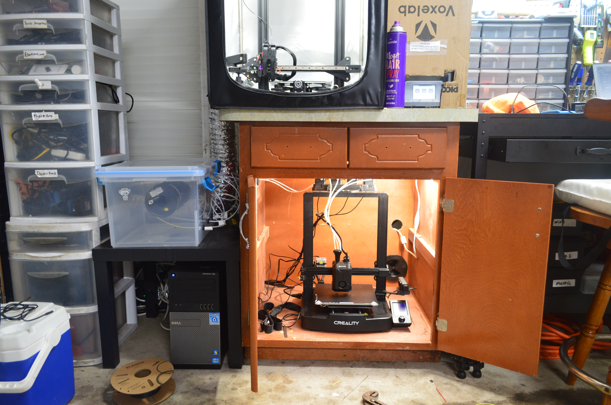
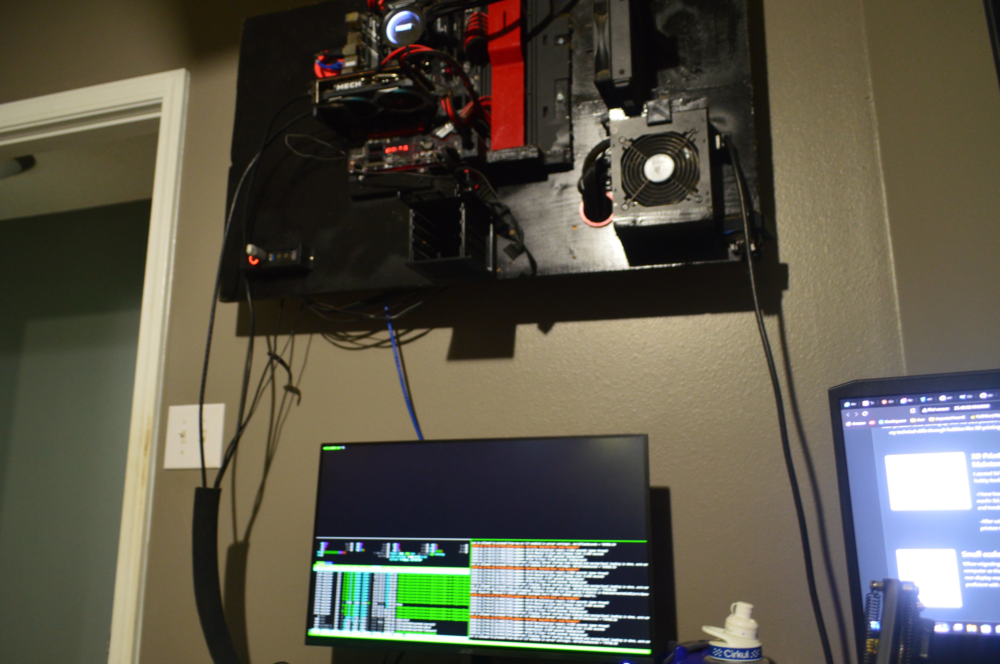

Hello!
My name is J. Murphy
I am a cybersecurity student by the day and an engineering hobbyist during the night.
My goal after my education is to integrate into the cybersecurity field as a career. The strong soft skills I use in the workplace include Leadership, communication, teamwork, problem-solving, and creativity. I strive for efficiency in team integration, communicating with other team members to stay on the same page. I approach issues by assessing the main problem while coming up with the best possible solution for an issue. If applicable, I will apply creative outside-the-box thinking for certain issues. In my free time, I exercise my technical skills through hobbies like 3D printing, programming, small-scale server administration, IOT development, device repair, CAD, and more to come in the future.

3D Printing Repair and Maintenance
I started 3d Printing as a beginner in this hobby back in 2021.
-I have learned to install OctoPrint onto marlin 3D printers for remote management and troubleshooting.
-After using marlin, I moved all of my 3d printers to Klipper.

Computer Aided Drafting
CAD was a skill that I picked up with 3d printing.
-I use DSM or Design Spark Mechanical as my main CAD software.

Small scale server administration
My Klipper host is based on a non display manager version of Debian.
I am also proficient with Arch Linux.
The photo shows my Debian multi-application server hosted on my wall mounted computer.

Device Repair
When an electronic breaks I typically try to repair it myself.
I replace my iPhone 11 screen 6 times counting.
Any computer repair issues close friends or family have, I typically respond to help fix it. Following step by step guides.